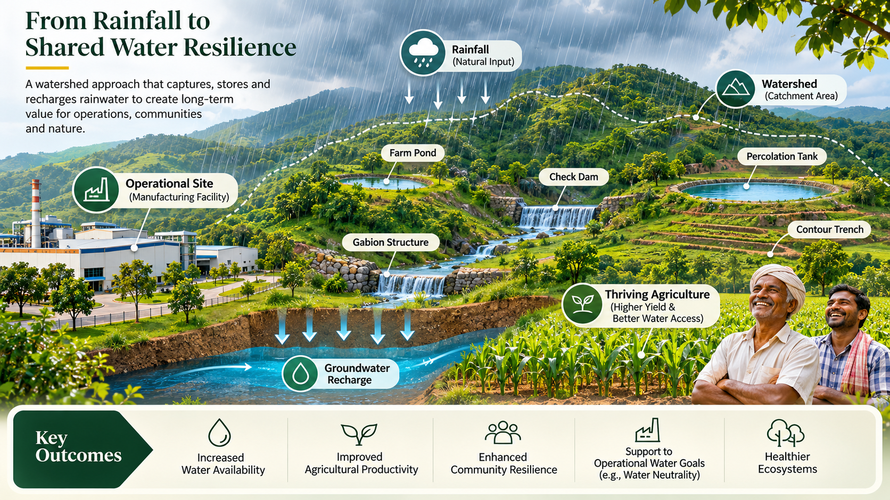
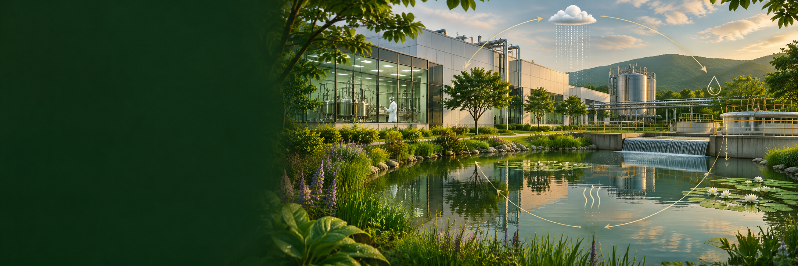
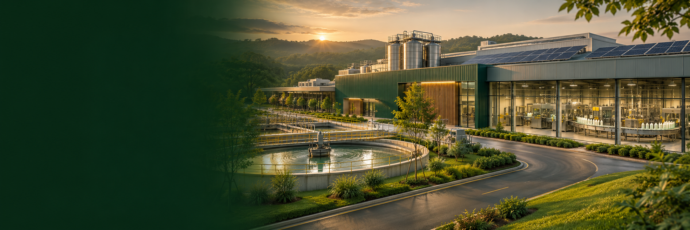

AREA 08 / 09
ESG · CLIMATE · SUSTAINABILITY
Water Neutrality
Turn water risks, operational dependencies and replenishment opportunities into long-term stewardship.
My experience covers water neutrality, stewardship and water-risk engagements across pharmaceutical, manufacturing, engineering, business services and infrastructure.

SELECTED EXPERIENCE
Work across different contexts.

CASE STUDY 01 · WATER NEUTRALITYMulti-Year Water Neutrality Advisory for a Large Pharmaceutical EnterpriseVIEW CASE STUDY ↗CASE STUDY 02 · WATER NEUTRALITYAI-Assisted Automation of Water Potential CalculationsVIEW CASE STUDY ↗CASE STUDY 03 · WATER NEUTRALITYSOP Development for a Large Corporate Water ProgrammeVIEW CASE STUDY ↗

CASE STUDY 04 · WATER NEUTRALITYWater Risk Assessment & 2030 Water Neutrality Roadmap for a Multi-Site EnterpriseVIEW CASE STUDY ↗Professional Experience Note This experience reflects my professional contributions to engagements undertaken during my employment with EY. Client identities and engagement-specific information are anonymised and generalised to respect confidentiality and professional obligations. The views presented are personal and do not represent EY or its clients.
← Back to all areas of expertise